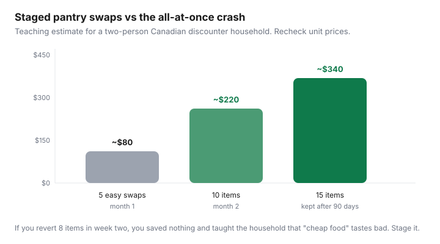

Food & Groceries · Canada
How to switch 15 pantry staples to Canadian store brands without feeling deprived
All-at-once brand switches fail in Canadian kitchens for a boring reason: someone hates the new ketchup on night two, the household declares “cheap food,” and you are back to nationals with a story attached. You do not need more willpower. You need a staged list, escape hatches, and a 30-day number so the experiment has a scoreboard.
This is method-first: why logos feel like quality, a 15-item starter swap tied to No Name / Great Value / Selection / Compliments availability, when nationals still win, picky-eater tactics, measuring savings, and reinvesting the gap into proteins or produce — not into a new snack brand. Ladder context sits in the companion private-label playbook.
Disclosure: No natural affiliate on a pantry swap. Meal-kit trials are optional backups on brutal weeks, not the method. Saving Optimizer may earn a commission if we later add kit or portal links. We do not currently claim those partnerships. Use the store you already shop.
Key takeaways
- Swap five easy commodities in week one, five ‘maybe’ items in week three, five preference items only after the first ten stick.
- Escape hatch: one official revert per person per month, written down. Unlimited complaining without a revert rule is how the system dies.
- Kids: change the back-of-house first (flour, beans, frozen veg). Leave mascot cereal until the adults have a win.
- Measure unit-price gaps after 30 days, not vibes. Reinvest into sale chicken, tofu, or fruit you will eat.
- Nationals can stay on three SKUs you can defend. They cannot stay on forty you cannot.
Psychology of brand loyalty at the shelf
Canadian packages use the same tricks as anywhere: familiar colours, “since 18xx,” and the fear that store brand means the 1990s can. You are allowed to prefer a taste. You are not required to prefer a logo on flour. Blind bowls beat arguments. Put the national and the No Name in identical ramekins. If nobody can tell, the logo was the product.
Loss aversion is why all-at-once fails: one bad mustard poisons fifteen good swaps. Stage it so a revert is a data point, not a verdict on your character.

The 15-item starter swap list
| Stage | Items | Why this stage |
|---|---|---|
| 1 — week 1 (easy) | Flour, sugar, salt, dried pasta, canned tomatoes | Commodities. Hard to fail a taste test in a sauce. |
| 2 — week 3 (quiet) | Rice, oats, canned beans, frozen mixed veg, peanut butter | Daily foods. Blind-test peanut butter; revert if you must. |
| 3 — week 6 (preference) | Coffee or tea, ketchup or mustard, jam, cereal or crackers, foil/bags | Where logos live. Mid-tier PC/Compliments allowed if value fails. |
If an item is already store brand, skip it and pull a replacement from the companion ladder (coconut milk, corn, yogurt tubs, frozen berries). The number 15 is a workload cap, not a religion.
Exceptions: when national brands still win
- A documented allergy or ingredient you can only find in one SKU.
- A genuine blind-test loss that the table will not forgive (some coffees, some hot sauces).
- Kid-lock-in that would create more takeout. Delay, do not martyr the week.
- A national loss-leader that is actually cheaper per unit this Thursday. Buy it, freeze it, go back to house brand next week.
Write exceptions on the list so they do not spread. “We keep Heinz” is a rule. “We keep whatever is red” is drift.
Kids/picky eater transition tactics
- Change ingredients they do not see (flour in muffins, beans in chili, frozen veg in pasta) before changing the cereal box that has a mascot.
- One new swap per week in lunches, not five. Predictability is the product for kids; surprise is for adults who consented.
- Offer a mid-tier PC/Compliments version as the bridge, not an immediate return to national.
- Do not run a family taste-test as a courtroom. Run it as “we’re trying this bag.” Courtrooms create martyrs.
Students and roommates: same staging. Shared ketchup is a treaty. Negotiate stage 3, not stage 1.
Measuring savings after 30 days
After stages 1–2 are on the shelf, open receipts or Flipp history:
- For each kept SKU: (old unit price − new unit price) × how many units you used in 30 days.
- Multiply by 12 for a rough annual. Label it as a sketch.
- Subtract any mid-tier upgrades that cost more than the national you left. Honesty or the number is fan fiction.
- If the 30-day gap is under $8 and you hate the process, stop. If it is $25–$40, you have a phone-bill sized win. Keep going to stage 3.
Do not invent a search-volume story about how much “Canadians save.” Your till is the dataset.
Reinvesting savings into better proteins or produce
Canada’s Food Guide budget advice is not “eat worse.” It is staples first so you can afford vegetables and proteins. If the swap frees $30/month, earmark it:
- Flyer chicken, tofu, or eggs you were skipping as “too expensive.”
- In-season or frozen fruit you will actually eat.
- An ethnic grocer produce stop — often cheaper than the discounter crisper on greens.
Do not reinvest into a new branded snack because you “earned it.” That is how the scoreboard resets to zero. If you want a treat, budget it as a treat.
When the 15 are stable, you are done with this project. Maintenance is unit prices and flyers, not a lifestyle of switching mustard forever.
Sources & date stamps
- Health Canada, Canada’s Food Guide: healthy eating on a budget (planning, store brands, staples).
- Canadian grocery-savings explainers (BudgetSmart, UnityLife-style 2026 price context) on private-label gaps — directional.
- Companion private-label ladder on this site for empire-by-empire names.
Frequently asked questions
What 15 items should I switch first?
Start with flour, sugar, salt, pasta, canned tomatoes, then rice, oats, beans, frozen veg, and peanut butter. Leave coffee, condiments, and cereal for stage 3 after the easy wins stick. Use whichever house brand your discounter stocks.
What if my partner hates store-brand ketchup?
Revert ketchup under the one-per-month escape hatch and keep the commodities. Mid-tier PC or Compliments is the bridge before you pay national forever. One SKU is not the experiment.
Will kids notice?
They will notice mascot cereal and familiar snacks. They often will not notice flour, beans in chili, or frozen vegetables in pasta. Change the invisible ingredients first.
How much money does this actually save?
Enough to matter if you keep the swaps — often low hundreds per year for two people on 10–15 commodities, depending on city and how national your old cart was. Measure 30 days of unit prices. Do not quote a national average as your own.
Do I have to switch coffee?
No. Coffee is a preference item in stage 3. If the house brand fails a blind test, keep the national or a mid-tier and take the win on oats and tomatoes.